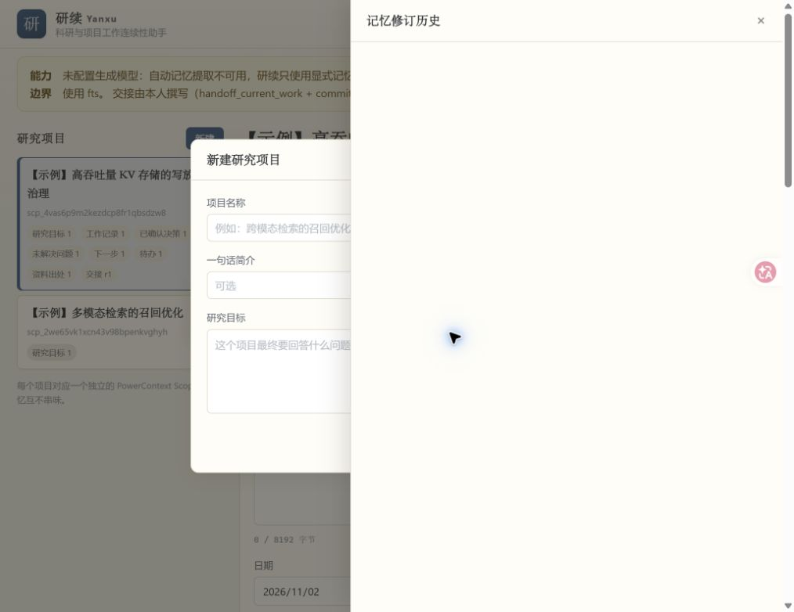

研续
把「上次做到哪儿了」这件事交给 PowerContext 记住，而不是靠翻聊天记录和自己的脑子。 创建研究项目 → 录入实验记录 / 决策 / 待办 / 资料出处 → 结束工作时保存交接 → 新会话一屏恢复目标、已确认决策、未解决问题和下一步 → 导出带来源追溯的组会 / 周报 Markdown。
科研工作最大的隐性成本是「断点」
一次实验做到一半、一个会话结束、一周过去，下一次坐下来时要重新拼凑：我到底在做什么、已经确认了什么、什么还没解决、下一步是什么。
结论散在四处
目标在开题文档里，决策在群聊里，失败原因在脑子里，数据在某个过期表格中。重建一次很花时间，且经常重建错。
假待办反复出现
三个月前已经解决的问题、已经放弃的方向，因为没人更新文档，每次汇报都被重新列成「待办」，评审时又要解释一遍。
结论说不清依据
「我们当时测过，写放大是 9.8」——哪一次实验、哪一版数据、谁做的判断？没有可回溯的引用，汇报就只剩断言。
换人 / 换会话即断档
交接内容口头说完就散，接手的人无法核对「我看到的是不是最新状态」，也无从判断哪些是已验证事实、哪些只是前任的说法。
PROJECT.md 与 DEVELOPMENT.md）。
研续本轮没有做用户研究，也没有对自己的恢复流程计时。若将来要给出量化收益，
须先做可复核的测量并公开样本与步骤。
五步闭环，每一步都落在真实 PowerContext 调用上
下面每格底部的等宽字体是该步骤实际调用的 PowerContext 官方 SDK / HTTP 接口，不是示意。
创建研究项目
一个项目 = 一个 PowerContext Scope，scope_id 就是隔离键。研究目标作为第一条记忆写入。
目标过长会在创建 Scope 之前被拒，不会留下半成品项目。
录入记录 / 决策 / 待办 / 资料出处
七种类型：研究目标、工作记录、已确认决策、未解决问题、下一步、待办、资料出处。
「依据 / 原因」映射到 PowerContext 的 reason，因此进入官方变更历史，是审计价值最高的一列。
结束工作 · 保存交接
交接内容由本人撰写，每条已确认状态尽量绑定真实 MemoryCitation（basis=verified）；
正文一旦被改得与所引记忆不一致，标记当场降级为 declared 并说明原因，不假装仍是已验证。
每次提交追加一个不可变 Revision，从不覆盖历史。
新会话 · 恢复工作
一屏返回：上次交接与 evidence_checks、目标、已确认决策、未解决问题、
仍可行动的下一步、未完成待办、最近记录、资料出处，外加 PowerContext 自己打包的上下文。
已解决的问题与已关闭的下一步单列，不混进待办语义。
正式接手
请求必须带上你实际核对过的那个 Revision。它已不是最新版时返回 409 并要求刷新，
绝不悄悄换成最新版；成功后回执里的 Revision 与你的核对版本当场比对。
三项接收方核对与官方 ReceiverChecks 一一对应，accepted 时缺一不可。
输出带来源的组会 / 周报
服务端确定性拼装，不依赖任何模型。每条要点后带真实短引用 mem_xxxxxxxx@vN，
附录展开成完整追溯表（entry_id / entry_version_id / 条目版本 / 记忆工件版本 / 状态 / 变更序列）。
附录与引用计数只统计真正出现在正文里的条目。
PowerContext 是唯一数据真源
不复制、不改写、不重实现 PowerContext；只通过官方 PyPI 包 powercontext==1.2.0 的公开 SDK / HTTP API 调用。
不使用 localStorage 承载业务数据，不 mock，不做本地兜底。
| 能力 | 实际用法 | 无模型密钥时 |
|---|---|---|
| 项目隔离 | 一个项目一个 Scope；检索、恢复、报告都只在当前 Scope 内 | 可用 实测跨项目检索命中 0 条；跨项目读交接 Revision 返回 404 |
| 持久化 | 内嵌 PowerContext Server + SQLite（sqlite+aiosqlite） |
可用 两个独立 OS 进程共用同一 db 文件，写→退出→重开→读回一致 |
| 修订与历史 | revise_memory 保持 entry_id 不变、推进版本；list_memory_changes 给出 add / revise / deactivate 与 reason |
可用 旧版本仍可读回；无物理删除，退役后 state=inactive |
| 陈旧引用冲突 | 拿过期 citation 再 revise | 真实 409 服务端码 revision_conflict，原样透传 request_id |
| 来源回溯 | MemoryCitation（memory_ref + entry_id + entry_version_id）；交接的 evidence_checks 由 PowerContext 自己校验 |
可用 实测 3/3 条引用仍可回溯 |
| 交接（本人撰写） | handoff_current_work → commit_handoff → continue_handoff → acknowledge_handoff |
可用 这条路径不调用生成模型 |
| 交接精确版本读取 | selection=exact + revision=N |
可用 不存在的版本由服务端返回 404 artifact_not_found，原样透传 |
| 检索 | search_memory(mode="fts") |
仅关键词 无 embedding 模型 ⇒ 没有语义召回。search_modes=[auto, fts] |
| 自动记忆提取 | capabilities.memory_extraction |
关闭 实测 False；所有记忆由用户显式录入 |
| 交接自动生成 | /v1/handoff/prepare、/v1/handoff/activate |
503 需要 generation model。handoff_generation_unavailable —— 研续不使用这两个端点，并把该 503 作为可展示的真实错误 |
| 打包上下文 | prepare_context |
可用 实测 ready，带 trust: untrusted_history 前导语 |
InferenceConfig() 全字段为 None，
实测 12 个 prompt 能力全部 status: "disabled" / reason: "provider_not_configured"。
这是设计前提而不是故障，所以界面首屏不按警告呈现：
顶栏只写「记忆已连接 · 数据全在本机」，版本、存储后端、检索方式、能力边界与 Scope / 项目标识符
都收进默认折叠的「技术详情」。
POST /v1/scopes、GET /v1/scopes/{id}、POST /v1/scopes/default，
没有「列出全部 Scope」接口。因此本地保留一份极薄的项目名册
（project_id / name / summary / scope_id / 时间戳 / archived），仅用于列表、排序与 scope 解析。
所有实质内容只存在于 PowerContext，本地库里不复制任何记忆正文。
五条诚实性不变量
独立验收暴露的问题有一个共同形状：数据是对的，呈现方式在撒谎。这五条因此升级为架构级不变量，各自有回归测试锁定。
| 不变量 | 规则 | 反例（修复前的真实行为） |
|---|---|---|
| 有效状态语义 | kind 是分类，status 才是状态，两者不能互相冒充。没有状态标注的问题按未解决处理。 |
问题全 resolved、步骤全 done/dropped 时，草稿判定仍写 blocked；恢复简报把它们塞回「未解决问题」和「下一步」 |
| 时间口径写进产物 | EntryChange 只有 revision / op / reason / entry_version_id，没有时间戳。条目的 date 是记录日期，绝不可冒称解决时间。 |
报告里出现「本期已解决」小节，挂在统计区间之下，读者会理解成本区间内解决 |
| 引用计数只认真正出现的 | 附录、citation_count、source_count 全部由「正文里实际调用过引用」的收集器产出。 |
区间外的记录、根本没进正文的条目也被算进引用数与附录 |
| 降级必须可见，失败必须出声 | 只有「该版本确实读不回来」（服务端 404）才允许降级为一条显式的不可用说明；其余异常原样抛成 5xx。 | 逐版本读历史时用裸 except Exception: continue，历史悄悄变短，界面看起来正常 |
| 可点击性由协议决定 | 只有 http:// / https:// 才渲染成链接；其余（含 DOI 这类纯标识符）作为纯文本原样展示。判定函数前后端共用。 |
任何 URL 都渲染成 <a href>，只做 HTML 转义 —— 转义挡不住 javascript: |
accepted 回执，
等于宣称核对过一份已经过时的状态 —— 那正是要避免的不诚实。
探针已实测：服务端会静默接受陈旧 revision（用户核对 r1、后端确认 r2），
所以这道闸门必须由研续自己把守，不能指望上游报错。
温暖纸色，首屏只讲研究
视觉语言是「纸、墨、靛」：安静、克制、可读性优先。主视图突出研究内容、继续工作与下一步； 技术细节折叠收纳；按钮用看得懂的动词（保存记录 / 创建项目 / 保存交接 / 生成 Markdown / 确认接手）。

display 无条件盖掉浏览器默认的
[hidden]{display:none}（与选择器优先级无关）。已修复，见下节。
工作台账（首屏）
顶栏「记忆已连接 · 数据全在本机」+「技术详情」按钮；左侧项目列表；中间「继续工作」英雄区；下方七类记忆分组，每条带 mem_xxxxxxxx@vN 短引用与变更序列。
恢复工作
上次交接 Revision 与判定、逐条打勾的证据回溯检查、分类卡片、PowerContext 打包上下文原文（可展开）。
修订历史抽屉
逐版本快照、PowerContext 原始 memory text、变更日志（revision / op / reason / entry_version_id）；读不回的版本显式标为不可用。
组会 / 周报
八个章节 + 来源追溯附录，头部印统计区间与时间口径；支持下载 .md 与复制全文。
窄屏（约 520px）
顶栏换行、英雄区堆叠、按钮全宽、抽屉占满视口宽度。
visibilityState=hidden、outerWidth=0），截图工具直接拒绝出图，
CDP 鼠标事件也是空操作。本轮没有伪造任何界面截图；
唯一一张真实截图是上面那张 P0 现场，由协调人在可见 Edge 中拍摄。
其余截图需在可见浏览器里补拍。
在本机跑起来
下面是 Windows PowerShell 命令，每个代码块只有一条，请逐块复制执行。 多行粘贴在 PowerShell 里容易把注释和命令黏成一行，所以这里不合并。
环境版本（本机实测）
| 操作系统 | Windows 11，10.0.26200 x64 |
|---|---|
| Shell | Windows PowerShell 5.1 |
| Python | 3.11.17，解释器 D:\conda\envs\oceanbase\python.exe（既有 Conda 环境，未新建） |
| powercontext | 1.2.0 |
| fastapi / uvicorn | 0.162.0 / 0.54.0 |
| httpx / pydantic | 0.28.1 / 2.14.2 |
| sqlalchemy / aiosqlite | 2.1.6 / 0.22.1 |
| pytest | 9.2.0 |
| 模型密钥 | 一项都没配，核心流程照跑 |
1 · 进入项目目录
cd "E:\Ocean Base\qoder-competition\qoder"2 · 安装依赖
python -m pip install -r requirements.txt若你的 python 不指向上面那个环境，请把 python 整条替换成 D:\conda\envs\oceanbase\python.exe。
3 · 让控制台正确显示中文（不改系统区域设置）
$env:PYTHONIOENCODING = "utf-8"4 · 从空目录播种一整套示例数据
python scripts\seed_demo.py --data-dir .tmp\demo --force脚本只调用研续自己的 HTTP API，全部真实写入 PowerContext：创建两个项目、写入 7 条记忆、修订、 故意用过期引用触发 409、退役、保存交接、接手三探针、校验隔离、生成周报。 示例数据带【示例】前缀，且数据本身就写明「合成演示数据，全部数字均为虚构、非实测」。
5 · 指定数据目录与端口
$env:YANXU_DATA_DIR = "$PWD\.tmp\demo"$env:YANXU_PORT = "8000"6 · 启动服务
python -m app.main冷启动到可访问约 10.5 秒（本机实测），其中约 7.3 秒是 PowerContext 服务端模块的导入开销，不是研续自身的启动逻辑。
7 · 打开页面
浏览器访问 http://127.0.0.1:8000；交互式接口文档在 http://127.0.0.1:8000/api/docs。
不想用示例数据，就跳过第 4 步、把第 5 步指向一个空目录，从空白开始建自己的项目。
跑测试（另开一个 PowerShell 窗口）
cd "E:\Ocean Base\qoder-competition\qoder"$env:PYTHONIOENCODING = "utf-8"python -m pytest -v本机实测输出
collected 43 items tests\test_api_e2e.py ....... [ 16%] tests\test_codec.py ........ [ 34%] tests\test_m2_regressions.py ......... [ 55%] tests\test_site_contract.py ....... [ 72%] tests\test_ui_contract.py ............ [100%] ============================= 43 passed in 26.48s =============================
没有任何 mock：每个端到端测试都拉起真实的内嵌 PowerContext Server（真实 SQLite，临时数据目录），
再用 httpx.ASGITransport 打真实 HTTP 路由。test_m2_regressions.py 里每个测试的 docstring
都写明「修复前的错误行为」，断言失败时能直接看出是哪一处回退。
已验证 / 未验证，分开写
协调人先用 oceanbase 环境独立复跑测试，再用探针脚本做验收，
打回了 1 个 P0 与 8 项后端问题。以下是修复后的真实状态 —— 包括仍然没有通过验证的部分。
| 项 | 状态 | 依据 |
|---|---|---|
| P0 · 覆盖层常驻遮挡 | 代码已修，可用性未验证 | 层叠机制已在真实渲染引擎里量到反转：带 hidden 时四个覆盖层计算 display 均为 none、盒尺寸 0；去掉 hidden 才恢复 flex/grid。但「人能用鼠标正常操作」需可见浏览器复验。 |
| 有效状态语义 | 通过 | continuable → blocked → complete 三段推进 + 恢复简报分类，回归测试覆盖 |
| 接手绑定核对过的版本 | 通过 | 缺 revision → 400；陈旧 → 409 且 details 含 viewed/latest；成功回执的 Revision 与核对版本一致。seed 脚本当场比对回执，不一致即退出。 |
| 三项 ReceiverChecks | 通过 | 运行时自省 powercontext.http 核实字段为 live_state / capability / authorization，UI 三个复选框文案与之一一对应；5 种部分勾选组合均 400 |
| 交接精确版本读取 | 通过 | 八行边界全部实测：存在的版本 200、不存在 404 artifact_not_found（带真实 request_id）、跨项目 404、缺 revision 400、revision=0 422、selection=prepared 400 |
| 报告时间口径与引用诚实 | 通过 | 倒置区间 422；「本期已解决」已改名并加口径说明；dropped 下一步带删除线单列；附录行数 == citation_count == 真正进正文的条目数 |
| URL 协议白名单 | 通过 | 9 种 scheme 实测 url_href 为空（含 javascript: / data: / file: / vbscript: / 裸 DOI）；报告正文从不出现 <javascript: |
| 历史不静默截断 | 通过 | 健康时 unavailable == []；停掉内嵌 Server 后 → 5xx、错误码以 powercontext_ 开头、响应体不含 changes |
| 超长目标不留半成品项目 | 通过 | 4000 字目标 → 400 goal_too_long（带 byte_length / limit=8192），随后项目列表返回 []；缩短后重试即成功 |
| ISO 日期归一化 | 通过 | 本轮新发现：Python 3.11 的 fromisoformat 也接受 20261102，而区间过滤靠字典序比较，"20261102" > "2026-11-07" 为真 —— 会给出错误区间且不报错。现已统一归一为 YYYY-MM-DD。 |
| 项目隔离 / 持久化 / 修订历史 / 陈旧引用 409 / 真实错误透传 / 无密钥 / 不用 localStorage | 通过 | M1 验收项 A1–A4、A8–A10，后端结论由跨进程 smoke test、seed 复跑与自动化测试独立支撑 |
| 界面视觉与鼠标可用性 | 未验证 | 开发环境的浏览器面板 visibilityState=hidden、outerWidth=0；截图被工具拒绝（NATIVE_BROWSER_VIEWPORT_UNAVAILABLE）；CDP 点击返回「成功」但页面无任何变化、焦点始终在 BODY。已开好可见 Edge 窗口连同运行中的服务移交协调人。 |
| 窄屏实际观感 | 未验证 | 断点已写进 CSS（1080 / 820 / 520px）并有结构测试，实际观感需可见浏览器 |
| Qoder Sites 发布 | 未执行 | 按本阶段要求不发布。本目录只是静态源码，须先由协调人完成界面复验。 |
.drawer{display:flex} 本身「正确生效」，错的是它与 [hidden] 的组合结果。
显隐这类跨规则层叠的性质，必须直接量「带 hidden 时的计算 display」，或者干脆用眼睛看。
M1 的原始记录已按要求一字未改地保留，需要更正的地方就地加了「⚠ M2 更正」小块。
仓库内的可复核材料
下列路径均相对于仓库的 qoder/ 目录。全部是真实运行产物；
协调人的探针原始输出未被覆盖、未被修改。
assets/m1-p0-overlays.png 是它的副本。
packaging、pip、setuptools、wheel，因此不存在覆盖既有包的风险。
status 字段按角色分工由协调人更新。
项目全程遵守的边界
| 不重实现上游 | 不复制、不改写、不重实现 PowerContext，只通过官方 PyPI 包 powercontext==1.2.0 的公开 SDK / HTTP API 调用。内嵌 Server 沿用官方 examples/jupyter/_tutorial.py 的既有模式。 |
|---|---|
| 不伪造成功 | 任何 PowerContext 调用失败必须原样暴露：服务端消息、错误码、真实 request_id、details 全部透传，只在一旁补一句中文提示。禁止吞异常返回 200、编造 request_id、用缓存冒充实时结果。 |
| API 从官方资料核对 | 阅读公开文档 + 对已安装包做运行时自省 + 用真实请求打内嵌 Server 三层核对，不猜字段名。据此纠正了多处凭文档容易猜错的细节。 |
| 目录与环境 | 只写仓库 qoder/ 目录，不动其他赛题目录，不推送官方仓库；不修改参考目录、不读取其中凭据；使用既有 Conda 环境，不新建；不修改系统代理与安全设置。 |
| 已知上游边界 | PowerContext 官方把 Windows 支持标注为 experimental（macOS / Linux 为正式支持）。本机实测 smoke test 与全部 43 个测试通过，未遇到 Windows 特有问题，仍按官方口径列为已知风险。 |
| 安全边界 | 单用户本地工具，无鉴权，只应监听回环地址。资料链接的可点击性由协议白名单决定，前后端共用同一判定。 |